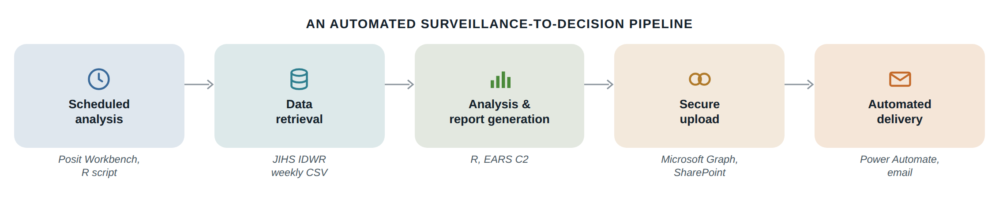

How it works

A scheduled R script retrieves the latest surveillance data, applies an alert rule, and writes two outputs: an HTML report for people and a JSON summary for machines. The files are uploaded securely through the Microsoft Graph API, and Power Automate reads the summary and sends a notification automatically.
Each step can be replaced without rebuilding the rest. The same structure runs in daily production for a public health surveillance program, and it was adapted as a prototype for Japan's national influenza surveillance data, where only the retrieval and analysis steps changed.
See an example report ↗